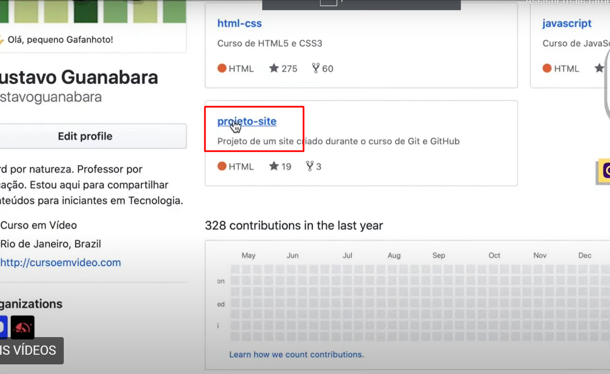
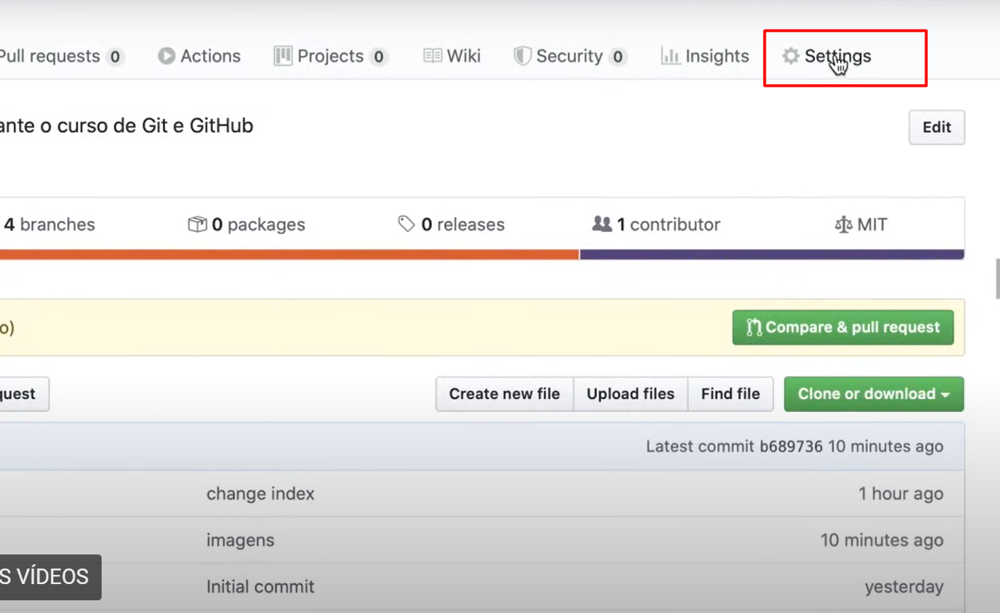
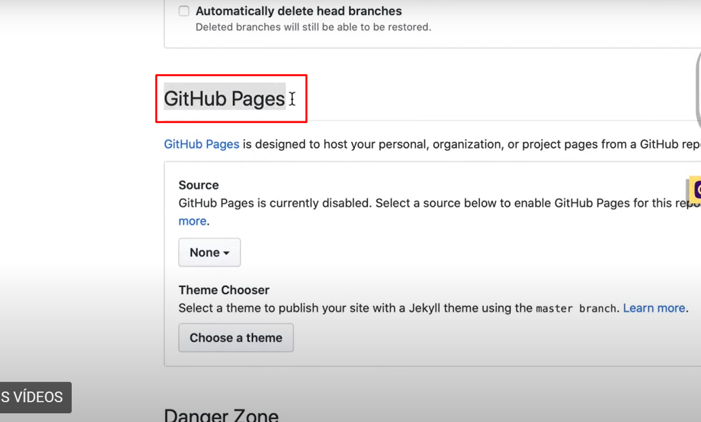
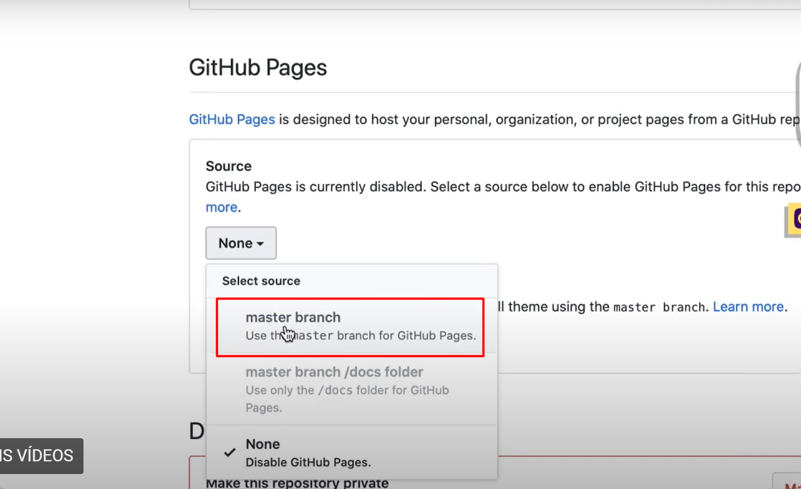
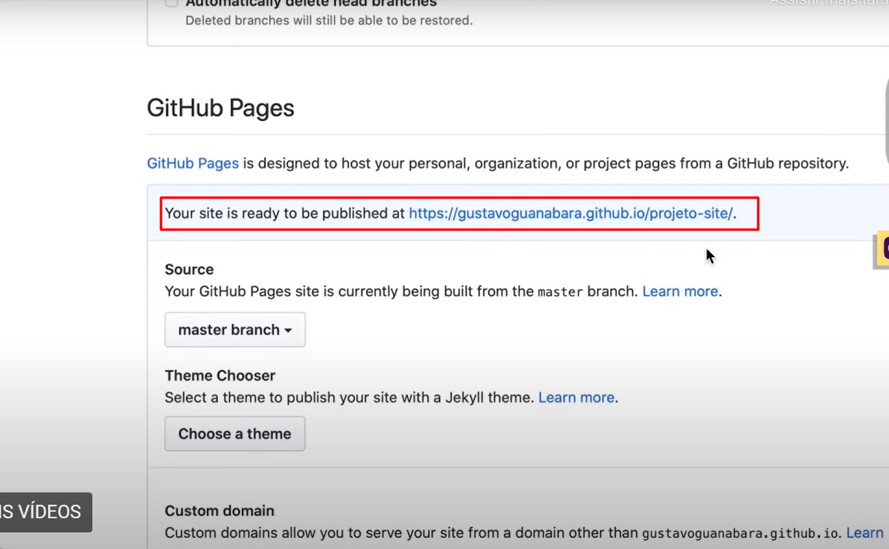

Para utilizar os serviços de hospedagem gratuito do GitHub é simples, basta seguir os passos a seguir.
01 Ter um site criado

Primeiro selecione o projeto que quer hospedar

Na parte superior direito vá em Settings

Porcure a aba GitHub Pages

Selecione o branch Master (a opção doc folder serve para hospedar arquivos da pasta doc que não são html)

Pronto, seu site já tem um link dedicado pelo GitHub.